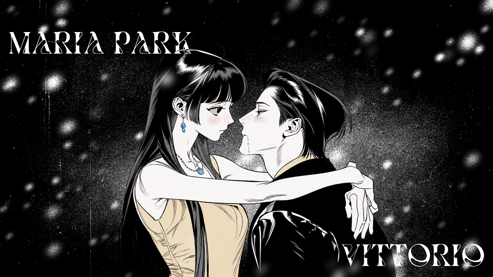

1920–1922Left the Soviet Union with her family,
traveling by way of Harbin before settling in the United States.
Spent the remainder of her childhood in America.
1922–1931Studied the violin under her mother.
Both parents died in 1931.
1933–1938Little is known of her activities during these years.
1940–Employed as a violinist under Salvatore.
1909–1919Raised as an orphan in the slums of New York.
1920Taken in by Silvio Salvatore at ten years of age.
Lost his tongue at Silvio's hands.
1920–1939Spent the next two decades in Silvio Salvatore's service.
1940–Assigned as the personal bodyguard of violinist Maria Park.